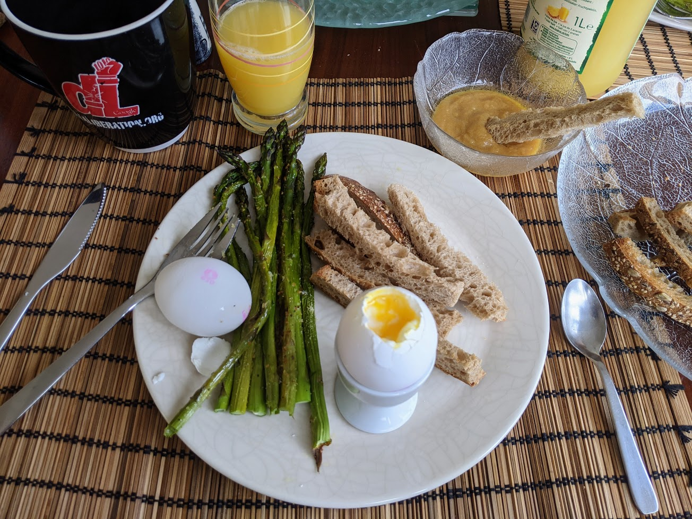

Œufs à la coque au beurre miso

Ici avec des asperges rôties
Pour trois personnes :
- Six œufs
- 40g de miso
- 40g de beurre
- Du bon pain
- Faire chauffer de l'eau dans une petite casserole jusqu'à ce que ça frémisse.
- Pendant ce temps, couper le pain en bâtonnets et les faire griller, par exemple au four, jusqu'à ce qu'ils commencent tout juste à changer de couleur.
- Pendant ce temps, mettre le miso et le beurre à fondre dans une autre petite casserole à feu moyen.
- Faire cuire les œufs trois minutes dans l'eau frémissante.
- Pendant ce temps, mélanger le miso et le beurre avec un petit fouet pour lier le tout en une crème liquide et homogène.
- Ouvrir les œufs, déguster immédiatement en trempant les mouillettes de pain dans le mélange beurre-miso, puis dans les œufs.
Remarque : à la place, ou en plus, des mouillettes de pain, on peut aussi utiliser des asperges rôties (ou grillées, ou même cuites à l'eau).